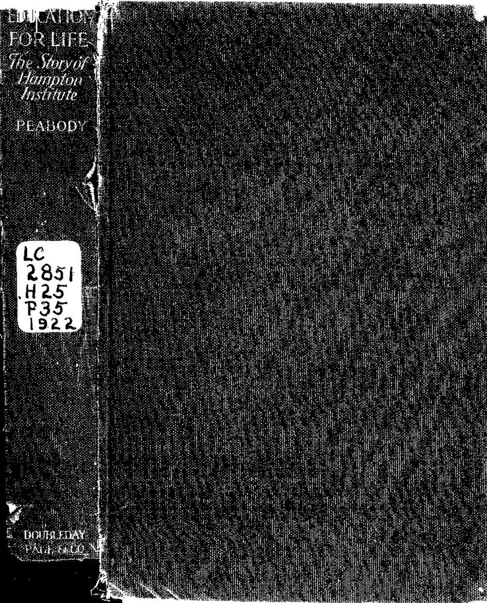
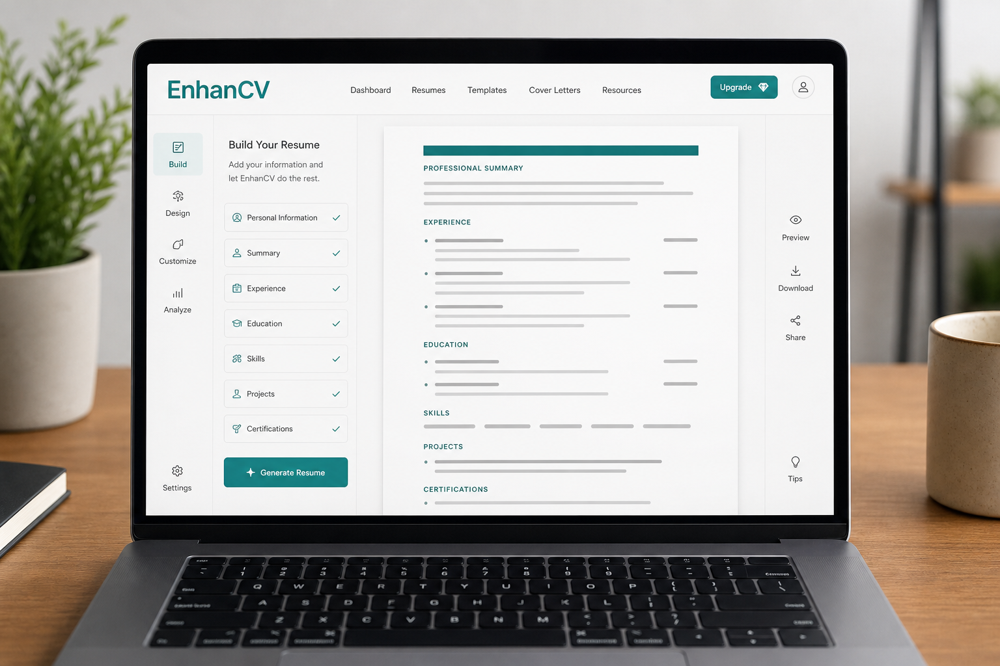
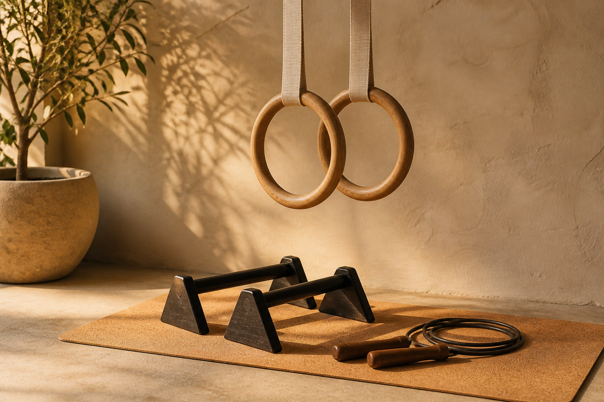
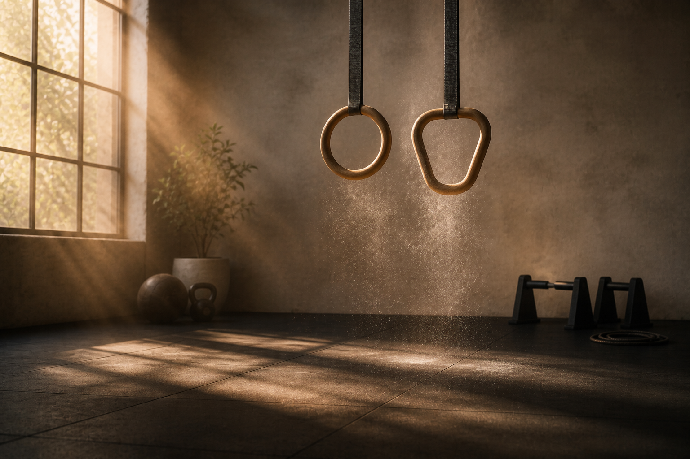
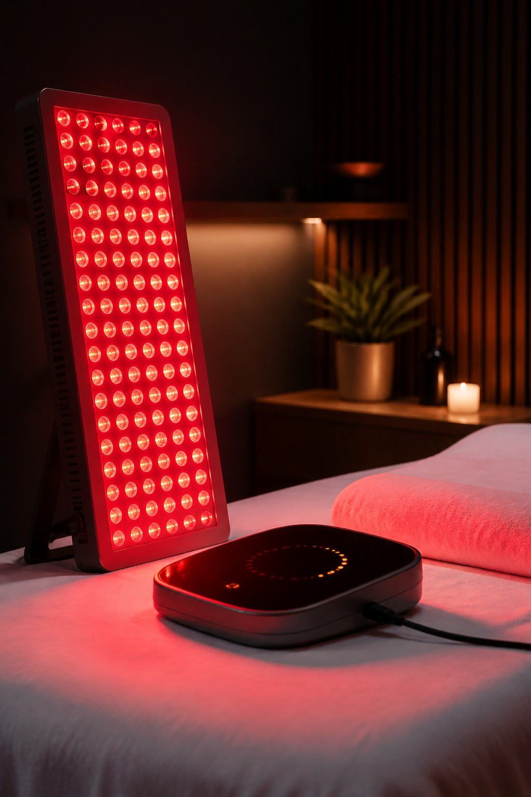
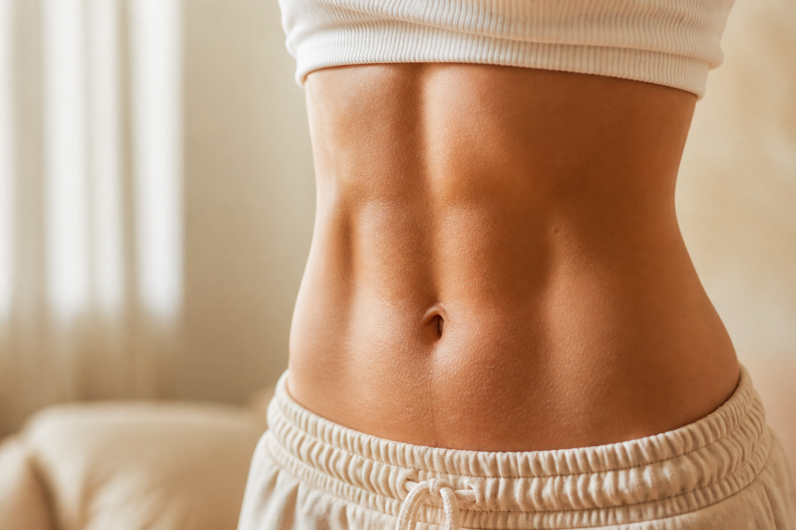
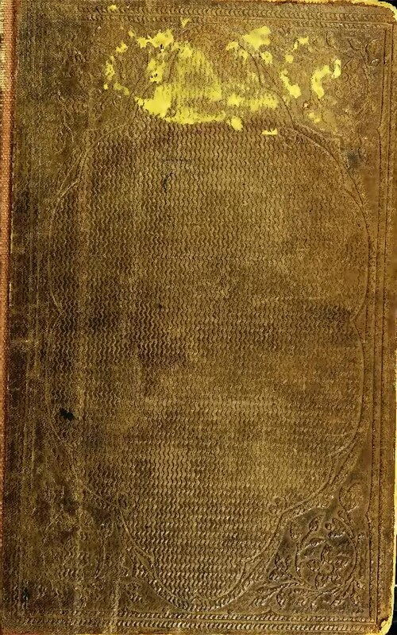

tuition
tuition
 scholarship re-application
scholarship re-application

Anthropic
EnhanCVPepperdine
Pinned serif labels
Thin italic names kiss the section photo with hairline leaders. The plaza stays the hero; tasks read like magazine callouts, not cards sitting on top of it.
body

calisthenics
inversions
induction
coreFilm strip along the edge
The section stays a full-bleed still. Tasks become a contact sheet on the bottom — glanceable frames you can scan without covering the photograph.
ambition
pressure against a line
A faint horizon cuts the photo. Unfinished tasks hang above it — waiting to cross. Done tasks fall below and go quiet. The line is the demand; crossing it is the release. Click a name to move it.
scholarship re-application
future self
Handwritten annotations
The photograph stays full-bleed. Tasks live in the print’s margin — ink in the gutter, like notes written on the edge of a still she is becoming.
received

certifiedletters
tuition
re-apply
abundance
Rubber marks on the photo
Document-heavy work stamped onto gold — slightly rotated, inked, official. Tasks feel processed, not decorated as Polaroids.